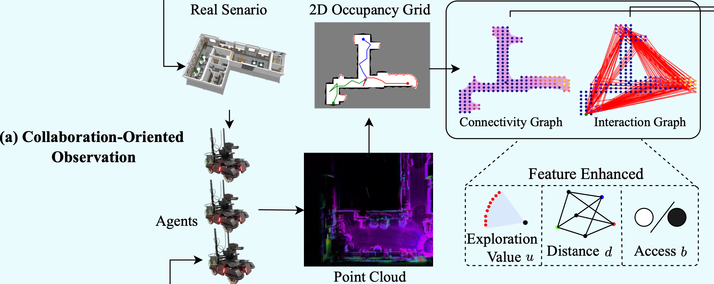
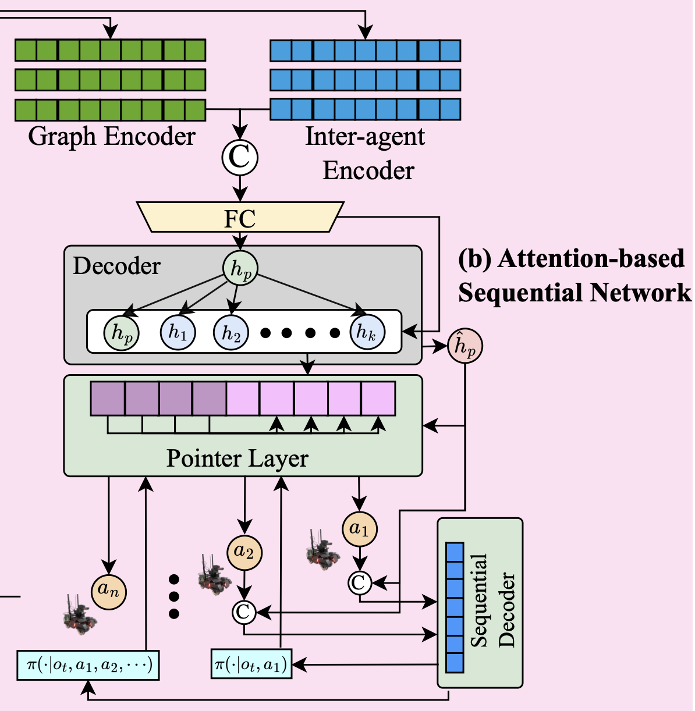
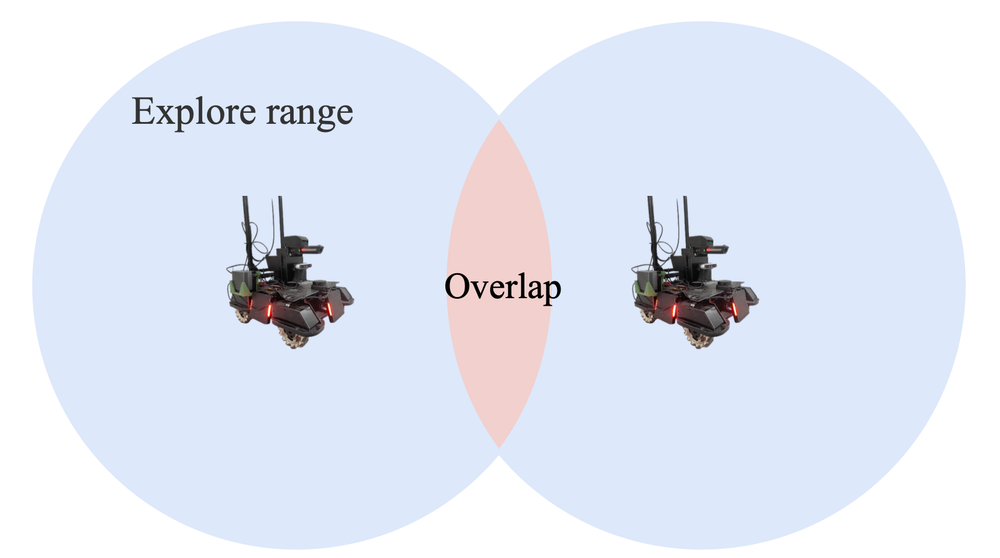
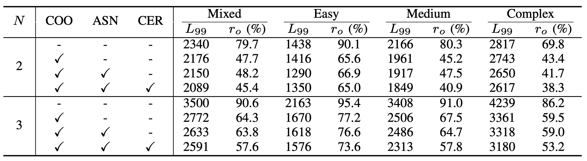
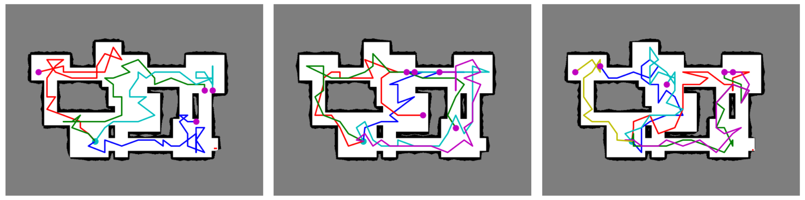

Two Heads are Better than One, Collaboration-Oriented Multi-Agent Exploration System
引言
想象一群机器人被派往一个未知区域执行任务，比如灾后搜救或环境监测。它们需要快速覆盖整个区域，但由于彼此视野有限或缺乏有效协作，常常出现重复探索同一区域的情况，导致时间和能量的浪费。这正是多智能体自主探索领域的核心挑战之一。
在我们的论文《Two Heads are Better than One: Collaboration-Oriented Multi-Agent Exploration System》中，我们提出了一种名为COMAE（协作导向多智能体探索系统）的新方法，发表在《IEEE Transactions on Cognitive and Developmental Systems》上。COMAE通过增强智能体之间的协作，显著缩短了探索路径，提高了效率。本文将深入介绍COMAE的设计思路、技术细节和实验成果。
为什么需要协作？
多智能体系统在未知环境中的自主探索有着广泛应用，比如物体运输、安全监控和灾难检测。然而，传统方法往往只关注地图覆盖，忽视了智能体之间的关系。这导致多个智能体可能挤在同一区域反复探索，既浪费资源，又拖慢进度。
我们的目标是通过协作让智能体“各司其职”，避免冗余，同时优化整体探索效率。为此，COMAE引入了三大创新：协作导向观察（COO）、基于注意力的序列网络（ASN）和协作探索奖励（CER）。接下来，我们将逐一剖析这些组件。
相关工作
在自主探索领域，现有方法大致分为三类：
- 基于前沿的方法：通过检测已知与未知区域的边界（前沿）来导航，但多智能体场景下任务分配常不均衡，导致重复探索。
- 路径规划方法：专注于生成最优路径，但难以完全解决协作中的冗余问题。
- 基于学习的方法：深度强化学习（DRL）近年来表现出色，但现有方案在处理智能体间复杂交互和长期规划时仍有不足。
COMAE结合DRL的优势，专注于协作，填补了这些方法的空白。
COMAE系统详解
COMAE是一个基于集中训练分散执行（CTDE）的多智能体框架，通过优化观察、策略网络和奖励机制来提升协作效率。以下是其三大核心组件：
1. 协作导向观察（COO）
要让智能体协作，首先得让它们“看得更清楚”。COO通过构建协作导向的节点特征和交互图，帮助智能体理解彼此的关系和环境的全貌。
具体来说，我们将环境抽象为一个连接图 ，其中节点 在自由区域均匀采样，并连接到最近的 个邻居（无碰撞时）。在此基础上，COO引入了手动特征和交互图，捕捉智能体间的动态信息。这种设计让每个智能体不仅知道自己在哪里，还能感知队友的位置和行动意图。

2. 基于注意力的序列网络（ASN）
有了清晰的观察，下一步是让智能体做出聪明决策。ASN利用注意力机制，聚焦于环境和队友的关键信息，并通过序列决策解码器生成战略性动作。
ASN包含编码器和解码器两部分：
- 编码器：处理连接图和交互图的特征，提取全局信息。
- 解码器：结合其他智能体的动作，输出每个智能体的下一步移动概率。
这种序列决策机制避免了同步决策中的不确定性。例如，当一个智能体决定向左移动时，其他智能体可以参考这一动作，选择不同的方向，从而减少重叠。

3. 协作探索奖励（CER）
光靠观察和决策还不够，我们需要激励智能体协作。CER通过奖励函数 鼓励智能体分散探索，避免扎堆。奖励包括四部分：
- 探索奖励 ：根据新增前沿区域计算。
- 距离惩罚 ：减少不必要的移动。
- 协作惩罚 ：惩罚多个智能体同时探索同一区域。
- 完成奖励 ：在任务完成时给予固定奖励。
例如，如果两个智能体同时靠近同一前沿， 会施加惩罚，促使它们分头行动。这种机制显著降低了探索重叠率。

实验验证
我们在一系列模拟和真实环境中测试了COMAE，并与主流方法进行了对比。以下是关键实验结果。
实验设置
实验在Gazebo平台上进行，使用Turtlebot3 Burger机器人（配备7米激光扫描仪）。我们测试了五种迷宫式地图和Explore-Bench中的六种场景。评价指标包括：
- 和 ：分别表示90%和99%覆盖率时的总距离。
- 重叠率 ：衡量探索区域的重叠程度。
消融研究
我们通过消融实验验证了COO、ASN和CER的贡献。

鲁棒性测试
我们测试了COMAE在不同智能体数量（2至6个）下的表现。结果显示，COMAE能适应多种配置，保持高效。例如，在6个智能体时，任务完成时间虽因场地限制不再显著缩短，但重叠率始终较低。

结论
COMAE通过协作导向观察、注意力序列网络和协作奖励，解决了多智能体探索中的冗余问题。实验证明，它不仅缩短了探索距离，还大幅降低了重叠率，展现了强大的实用潜力。
未来，我们计划将COMAE应用于更复杂场景，如动态环境或异构智能体系统，进一步挖掘其在现实任务中的价值。